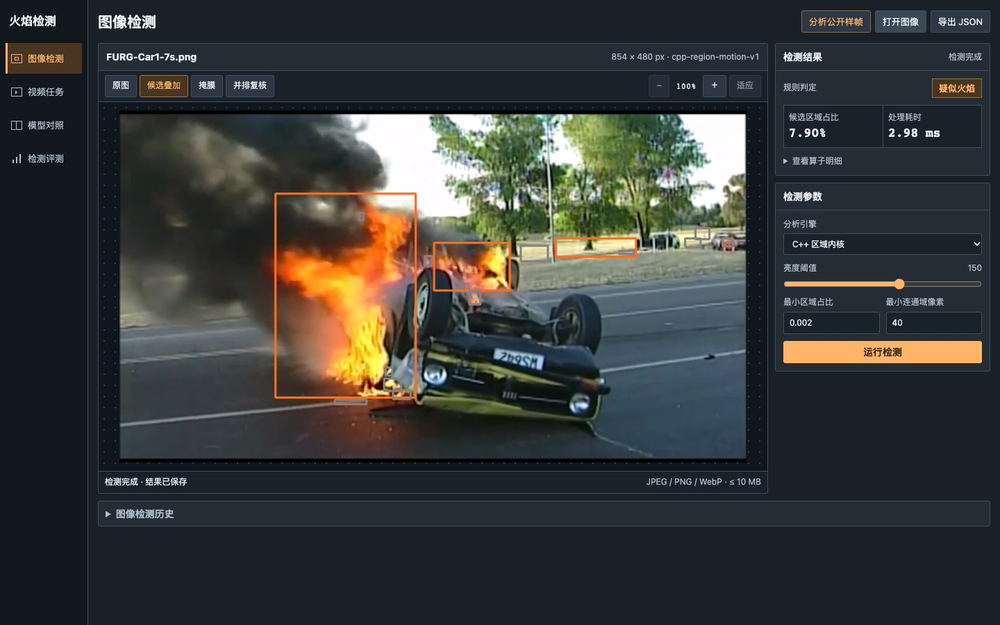

四段标注视频 · 按来源划分
火焰事件时间轴
标注事件 · 0–30 s
ONNX · 24–25 s
house6 的候选只覆盖标注时段中的一秒，时间 IoU 为 1/30（约 0.033），低于 0.5 匹配阈值。两段留出视频共有一个标注事件。
| 方法 | 检出事件 | 误报事件 | 漏检事件 |
|---|---|---|---|
| 规则 | 0 | 0 | 1 |
| ONNX | 0 | 2 | 1 |
对照不同匹配阈值
IoU ≥ 0.25
| TP | FP | FN |
|---|---|---|
| 0 | 2 | 1 |
IoU ≥ 0.5
| TP | FP | FN |
|---|---|---|
| 0 | 2 | 1 |
IoU ≥ 0.75
| TP | FP | FN |
|---|---|---|
| 0 | 2 | 1 |
各阈值使用同一批归档预测，与留出集标注匹配。
查看图像候选区域

另用 FURG 的 32 帧标注图像评测检测框，采用空间 IoU。上方视频按时间区间匹配。
FURG / CC0